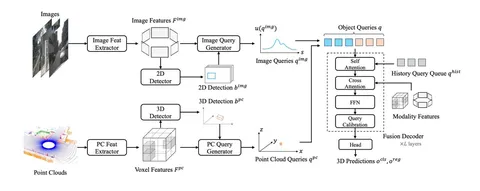

Модели с Lift Splat Shoot (LSS) хороши, но у них есть ограничения. Главное из них заключается в том, что при удалении от эго-агента точность и плотность BEV-фичей падает. А значит, ухудшается качество моделей, основанных на BEV. Методы с нелинейным BEV частично решают эту проблему, но они, как правило, упираются в потолок скорости работы при увеличении расстояния, на которое должна «видеть» машина.
Query-based-подходы, не формирующие BEV, позволяют создавать быстрые и точные модели, однако объединять фичи разных модальностей в такой постановке гораздо сложнее. Сегодня разберём статью об одной из реализаций — SOTA-модели для мультимодальной 3D-детекции.
MV2DFusion — perception-модель, использующая query-based-парадигму. Она фьюзит модальности, прогоняя предикты детекций из разных модальностей через один Deformable DETR, но учитывая особенности этих модальностей:
Потом все детекции конкатенируют и пропускают через трансформер. Темпоральность авторы реализовали путём добавления top-K query из T последних таймстепов в Self-Attention. Подробнее рассмотреть архитектуру модели можно на схеме.
Авторы утверждают, что гибкость MV2DFusion позволяет интегрироваться с любыми детекторами на основе изображений и облаков точек. По сравнению с BEVFusion (w/ CenterPoint), этот метод заметно улучшает качество, особенно на датасете Argoverse2 с long-range-предсказаниями на 204 метра. При этом MV2DFusion в 2 раза быстрее и использует в 3 раза меньше памяти.
Разбор подготовил
404 driver not found
